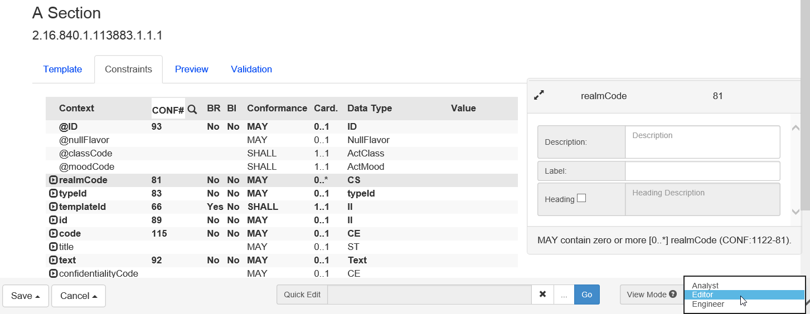

Released on Thursday, June 5, 2014
IMPORTANT: Your web browser caches JavaScript. In order for Trifolia to work properly, you may need to force your browser to refresh individual Trifolia pages for it to retrieve the latest version of the application’s JavaScript files. If you encounter any issues within Trifolia, try refreshing your browser before submitting a support request.
The user interface for Trifolia has been re-designed to provide a more responsive experience. The Twitter Bootstrap API and Javascript are used to provide a clean, consistent and client-side-oriented user interface. Users of Trifolia should see a notable increase in performance.
The template editor has been re-designed to maximize screen real-estate and reduce the amount of time that the user spends waiting for popup dialogs to load.


The template viewer now has an additional tab called “Relationships”, which shows how other templates relate to the template you are viewing.

Instead of using tabs in the constraint editor to separate the types of meta-data a user can view/edit for a constraint, a new “View Mode” option has been implemented. When a view mode is selected, it will show the fields available for that view mode in the constraint editor. The view mode stays the same when switching from one constraint to another.


In addition to the column filters that already exist in the browse screens, a broad search field has been added that will search multiple fields at once. For example, when searching for templates, the name, oid, implementation guide, and even conformance number fields are used by the broad search.

New Feature |
Provide list of sections using a template. |
New Feature |
Implement bootstrap for UI design |
New Feature |
Re-design template editor |
Improvement |
Layout/performance of "View Template" screen |
Improvement |
Default "Is Open" field to "Open" in template editor |
Improvement |
Export option for template statuses |
Improvement |
Value Set Binding - Default to DYNAMIC |
Improvement |
Expand the Terminology Browser window to use more screen real estate. |
Improvement |
Link to contained template in template viewer |
Improvement |
Name of template on Publish Settings Screen |
Defect |
Template editor must unmark identifier for children when branch is unmarked |
Defect |
Auto-resize terminology grids |
Defect |
Duplicate assert IDs |
Defect |
Export globally unique conformance numbers |
Defect |
Vocabulary export using incorrect publish date |
Defect |
Template Review returning wrong template oid |
Defect |
Template Editing - Constraints Search option not functioning correctly |
Defect |
Date picker for publish date - not obvious that there is a date picker |